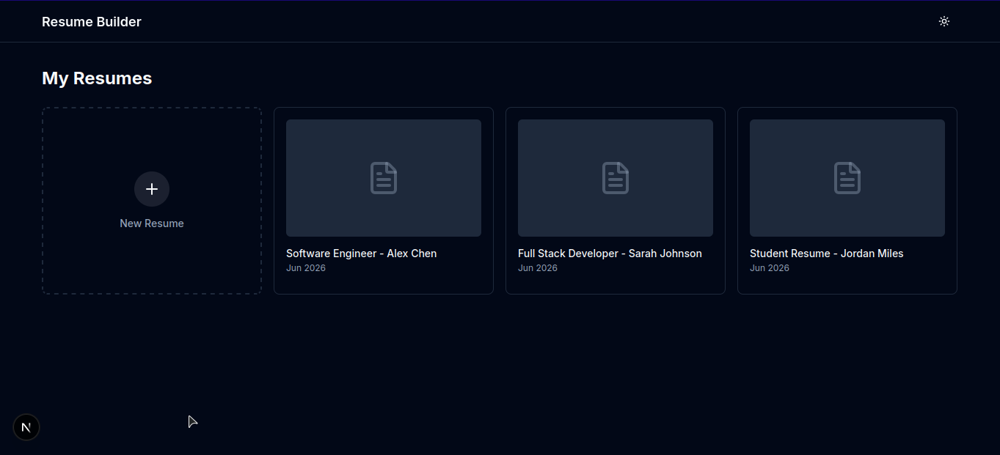
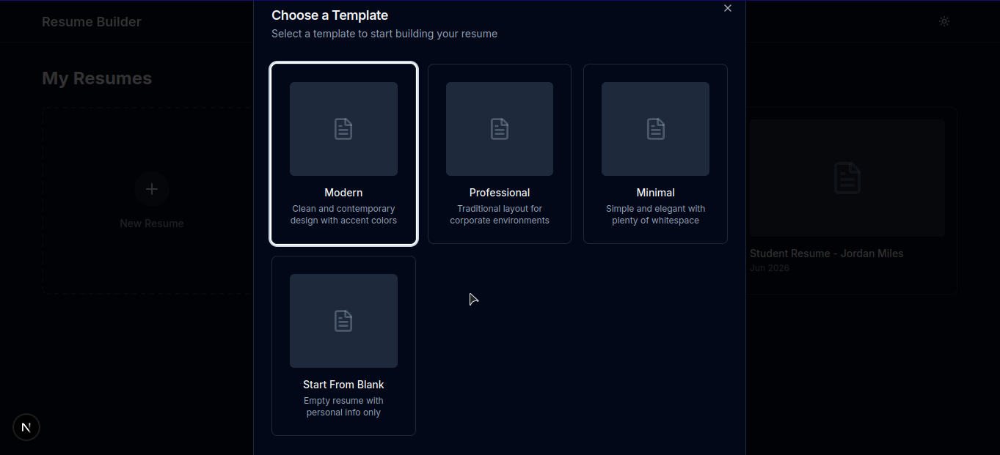
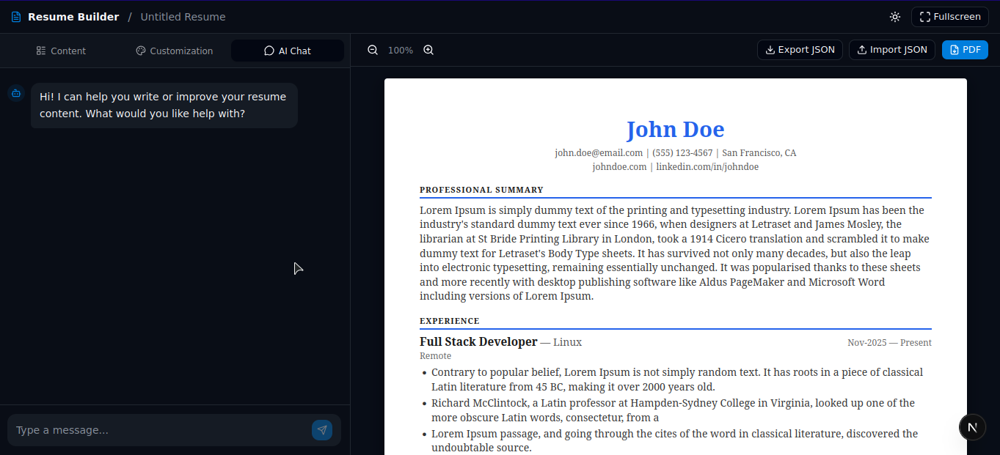
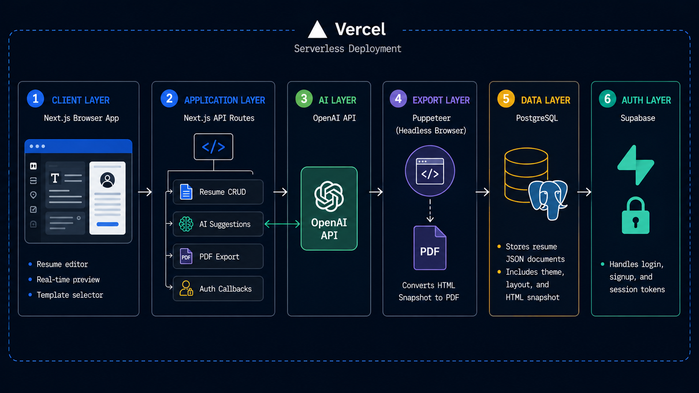

Overview
ResumeAI is a full-stack resume builder built with Next.js, leveraging its API routes as the backend and React for the frontend — keeping everything in a single codebase. Users can build a resume from scratch using one of 3 professionally designed templates, get AI-powered content suggestions via OpenAI, preview changes in real time, save their work, and export a pixel-perfect PDF using Puppeteer. Authentication is handled via Supabase and resumes are persisted in PostgreSQL.
The Challenge
Professional resume builders like FlowCV lock essential features behind expensive subscriptions, and managing multiple versions of a resume for different job applications is tedious and time-consuming.
The Solution
Built a free, self-owned resume builder with AI assistance to generate and refine content on the fly, multiple templates to switch between, and a save system that lets users maintain and edit multiple resumes from a single dashboard — all without a paywall.
Interface Highlights



Core Capabilities
AI-Powered Writing
OpenAI generates resume content, improves bullet points, and suggests relevant skills based on job title.
Real-Time Preview
Live rendering of the resume as the user fills in their details.
PDF Export
High-fidelity PDF generation using Puppeteer, matching the on-screen design exactly.
Authentication
Supabase-powered cloud auth for secure login and user management.
Enterprise Ready
Designed for 99.99% uptime and global compliance standards.
System Architecture

Diagram 1.2: System architecture illustrating the request flow between Next.js, OpenAI API, Puppeteer, PostgreSQL, and Supabase across REST and serverless function protocols.
Technologies Leveraged
Challenges & Solutions
Storing Resume Data
Storing a resume in a relational way — sections, fields, styles, layouts — is complex and hard to query or reconstruct consistently for PDF export and AI processing.
THE SOLUTION
Stored the entire resume as structured JSON (including theme and layout) in a JSONB field in PostgreSQL, alongside a pre-rendered HTML snapshot for PDF export. This made Puppeteer export straightforward, AI processing simpler, and the data structure flexible enough to support any template.
Custom Section Layout
Each built-in section has a defined layout — but custom sections created by users have no inherent structure, making consistent rendering and styling unpredictable.
THE SOLUTION
Introduced a predefined field type system — when creating a custom section, users pick from field types like text, list, tags, and date range. Each field type carries its own layout and styling rules, so rendering stays consistent regardless of the section. Skills and projects reuse the same field types, keeping the system lean and uniform.
Deployment & Infrastructure
System Data Flow
User Flow
Authentication Logic
Database Pipeline
Specs & Security
Infrastructure Stack
- Frontend + BackendNext.js-16.2
- AIOpenAI API
- AuthSupabase
- PDF ExportPuppeteer
- Deployment Vercel
- DatabasePostgreSQL 18.4
Security Enforcement
Secrets Management
Environment variables via .env, never hardcoded.
Authentication
Cloud-based auth via Supabase.
Technical Lessons Learned
AI Integration
Integrating OpenAI API into a production workflow to generate, rewrite, and suggest resume content dynamically based on user input and job context.
PDF Generation
Producing pixel-perfect PDF exports using Puppeteer by rendering pre-stored HTML snapshots, decoupling the export process from live UI state.
Auth & Security
Implementing Supabase for secure, scalable user authentication — handling signup, login, and session management without building auth infrastructure from scratch.
Next.js Full-Stack
Leveraging Next.js API routes as a lightweight backend alongside React on the frontend — eliminating the need for a separate server while keeping the codebase unified.
Dynamic Rendering
Building a real-time resume preview system that reflects user edits instantly using React state, with a field-type system that enforces consistent layout across both built-in and custom sections.
Data Modeling
Designing a flexible JSONB schema to store resume structure, theme, and layout as a single document — enabling fast retrieval, AI processing, and template switching without schema migrations.
Explore the Source Code
The entire project is open-source. Contributions, bug reports, and requests are welcome via GitHub.